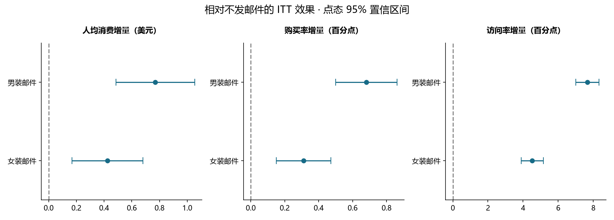
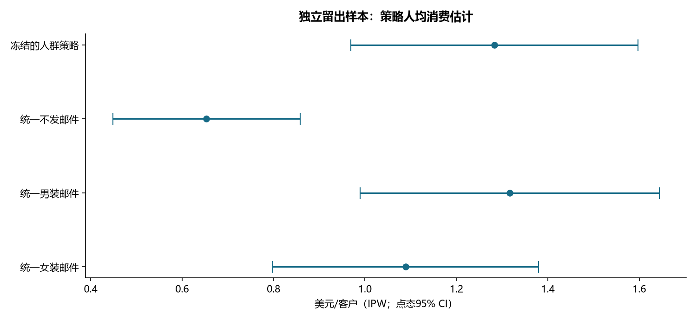

营销实验效果评估与人群策略
完成日期：2026-10-23 · 公开随机实验复盘 · 50% 独立策略验证样本
决策结论
- 64,000 名客户的三组随机实验中，男装邮件相对不发邮件，两周人均消费增加 $0.770（95% CI [0.485, 1.055]），女装邮件增加 $0.424（95% CI [0.169, 0.680]）。主检验 Holm 校正 p 值分别为 2.33e-07 和 0.00113。
- discovery 样本选出的最佳固定策略为 Mens E-Mail。冻结的人群策略相对它，在 validation 样本的人均消费差为 $-0.033，95% CI [-0.316, 0.250]。
- 人群策略未证明优于 discovery 选出的固定策略；优先保留简单方案并继续验证。 不能凭训练样本中某些分组均值更高就承诺个性化投放有效。
数据、质量与设计
来源：Kevin Hillstrom 原始数据发布。原始下载、大小和 SHA256 见根目录 data_manifest.json。该数据发布于 2008 年，结论仅针对该历史实验；不能外推到今日中国互联网营销。
邮件内容分为男装、女装；这不是客户性别。实验前客户特征和实验后两周结果分开使用。全部未购买客户的 spend=0 保留在分母中；以购买客户为条件计算的消费均值仅供描述。
- 三组人数：{'No E-Mail': 21306, 'Mens E-Mail': 21307, 'Womens E-Mail': 21387}。1:1:1 SRM 卡方检验 p=0.9037，数值与分类基线特征最大绝对标准化差异为 0.0137。平衡检查不能证明一切实验风险都不存在。
- 14 项数据与划分断言通过。原数据无客户 ID，以源文件行号保持可复现对应；相同特征/结果行不代表重复客户，未盲目去重。
- 方案见 ANALYSIS_PLAN.md，实施前冻结，但属于公开历史数据的回顾性方案，不声称原始预注册或自己上线实验。
| segment |
customers |
visitors |
visit_rate |
purchasers |
conversion_rate |
revenue |
revenue_per_assigned_customer |
spend_variance |
spend_per_buyer_descriptive_only |
| Mens E-Mail |
21307 |
3894.0000 |
0.1828 |
267.0000 |
0.0125 |
30311.6900 |
1.4226 |
315.2118 |
113.5269 |
| No E-Mail |
21306 |
2262.0000 |
0.1062 |
122.0000 |
0.0057 |
13908.3300 |
0.6528 |
134.2864 |
114.0027 |
| Womens E-Mail |
21387 |
3238.0000 |
0.1514 |
189.0000 |
0.0088 |
23038.1100 |
1.0772 |
228.4967 |
121.8948 |
平均处理效果

| arm |
control |
metric |
effect |
ci_low |
ci_high |
p_holm |
| Mens E-Mail |
No E-Mail |
spend |
0.769827 |
0.485140 |
1.054515 |
0.000000 |
| Mens E-Mail |
No E-Mail |
conversion |
0.006805 |
0.005000 |
0.008610 |
0.000000 |
| Mens E-Mail |
No E-Mail |
visit |
0.076590 |
0.069953 |
0.083226 |
0.000000 |
| Womens E-Mail |
No E-Mail |
spend |
0.424412 |
0.168957 |
0.679868 |
0.001129 |
| Womens E-Mail |
No E-Mail |
conversion |
0.003111 |
0.001499 |
0.004724 |
0.000156 |
| Womens E-Mail |
No E-Mail |
visit |
0.045233 |
0.038893 |
0.051573 |
0.000000 |
| Mens E-Mail |
Womens E-Mail |
spend |
0.345415 |
0.032561 |
0.658268 |
0.030469 |
| Mens E-Mail |
Womens E-Mail |
conversion |
0.003694 |
0.001743 |
0.005644 |
0.000412 |
| Mens E-Mail |
Womens E-Mail |
visit |
0.031356 |
0.024285 |
0.038428 |
0.000000 |
spend 单位为美元/被分配客户；conversion、visit 的 effect 为概率差，乘 100 得到百分点。相对提升另见 treatment_effects.csv。Welch 均值差检验用于金额与二元指标，大样本二元均值差采用渐近近似。CI 为点态 95%；显著性用对应检验族的 Holm p 值，两者含义不同。
主检验族为两项 spend vs control；四项辅助指标比较单独校正；三项男装 vs 女装直接比较单独列为探索性检验族。未通过“某组显著、另一组不显著”推断组间差异。
长尾消费金额补充用户级组内独立重采样 2,000 次：
| arm |
control |
bootstrap_ci_low |
bootstrap_ci_high |
| Mens E-Mail |
No E-Mail |
0.4873 |
1.0647 |
| Womens E-Mail |
No E-Mail |
0.1724 |
0.6792 |
| Mens E-Mail |
Womens E-Mail |
0.0276 |
0.6551 |
人群策略：先学习，再验证
按实验组分层，用固定随机种子 20261023 切分 discovery / validation，各 32,000 人。只用实验前购买类型在 discovery 中选择人均消费最高动作，并保存规则；validation 不参与选择。
| purchase_type |
chosen_arm |
discovery_customers |
discovery_no_email_mean |
discovery_mens_mean |
discovery_womens_mean |
| both |
Mens E-Mail |
3245 |
0.7394 |
3.6340 |
1.5593 |
| mens_only |
Mens E-Mail |
14408 |
0.7957 |
1.5666 |
0.9130 |
| womens_only |
Womens E-Mail |
14347 |
0.4853 |
1.0018 |
1.1173 |

| comparison |
effect |
ci_low |
ci_high |
p_raw |
p_holm |
| personalized vs No E-Mail |
0.6299 |
0.2546 |
1.0053 |
0.0010 |
0.0030 |
| personalized vs Mens E-Mail |
-0.0335 |
-0.3164 |
0.2495 |
0.8167 |
0.8167 |
| personalized vs Womens E-Mail |
0.1945 |
-0.1401 |
0.5291 |
0.2545 |
0.5091 |
策略评估使用已知随机分配概率 1/3 的 Horvitz–Thompson/IPW：只有客户实际接受的处理与策略推荐一致时，贡献为 3×消费金额，否则为零。与固定策略比较时对同一客户的两个伪结果做差，计算配对标准误；没有把相关策略当独立样本比较。
已知分配概率来自原始设计；实际分组人数并非恰好相等，有限样本 IPW 值不必等于直接组均值。金额长尾及分群样本少使验证区间较宽。分组点估计不等同于已证明处理效果异质性；未进行正式交互检验或宣称模型识别出“必被说服”的个人。
成本敏感性与下一轮实验
真实成本和毛利缺失，按假设毛利率 20%/40%/60%、单次触达成本 $0/$0.05/$0.10/$0.20 输出 cost_sensitivity.csv。净增益 = 消费增量×假设毛利率−假设触达成本；零成本不代表生产触达实际免费。以 40% 毛利率为例，男装邮件点估计的单次触达盈亏平衡成本为 $0.308，不是实测利润。
下一轮实验样本量的正态近似规划（每组人数；两侧 alpha=.025，power=.80）：
| metric |
target_absolute_effect |
alpha_two_sided |
power |
required_per_arm_approx |
| spend |
0.2000 |
0.0250 |
0.8000 |
63820 |
| conversion |
0.0020 |
0.0250 |
0.8000 |
27059 |
| visit |
0.0100 |
0.0250 |
0.8000 |
18041 |
规划使用本次对照组方差作为未来基线近似，未计算误导性的“事后 observed power”；正式新实验需重新确认人群、转化基线与金额分布。spend 的目标差为美元，二元指标的目标差为概率。
建议继续验证 discovery 选出的简单固定策略与不发邮件，同时增加退订、投诉和长期复购护栏。两周数据不能回答长期效果。
复现
在根目录运行 python run_all.py --project experiment。原始 CSV → 数据质量与分层划分 → SQL 分组指标 → 总体统计推断 → discovery 冻结策略 → validation 评估 → 图表与本报告。全部分析离线运行，不需要 LLM API 或密钥。